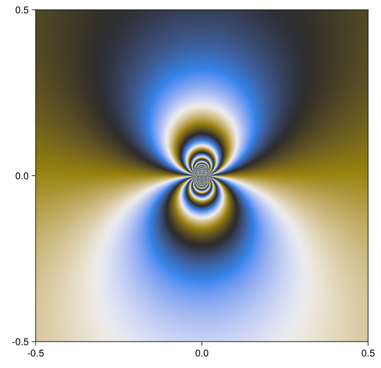
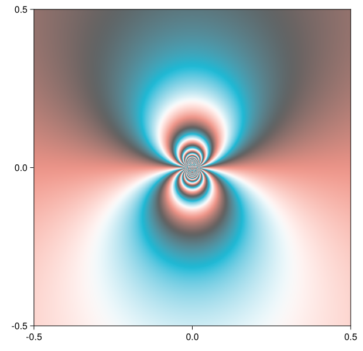

Plotting for Color Vision Deficiency
To distinguish phase values without introducing a discontinuity we need to use two stimuli. The shading used by domaincolor uses green-magenta and blue-yellow color opponents (i.e. a full rainbow), with only slight variation in lightness to enhance local contrast. This leaves lightness to display contour lines of the magnitude, but is problematic for viewers with color vision deficiency. For them, these color opponents are not (fully) distinguishable and hence the plot is rendered unreadable.
DomainColoring.jl hence provides alternative phase plots that are clearly readable to them, based on color maps developed by Peter Kovesi.
These color maps can also be used in the other plots as :pd/:CBC1 and :t/:CBTC1, respectively. However do note that their use of black and white might interfere with other plotting elements.
Phase plots for protanopia and deuteranopia
For these viewers it is difficult to distinguish red and green hues. The method pdphaseplot hence uses lightness and a yellow-blue sweep to display phase instead.
pdphaseplot(z -> exp(1/z), 0.5)
Phase plots for titranopia
For these viewers it is difficult to distinguish blue and yellow hues. The method tphaseplot hence uses lightness and a red-cyan sweep to display phase instead.
tphaseplot(z -> exp(1/z), 0.5)